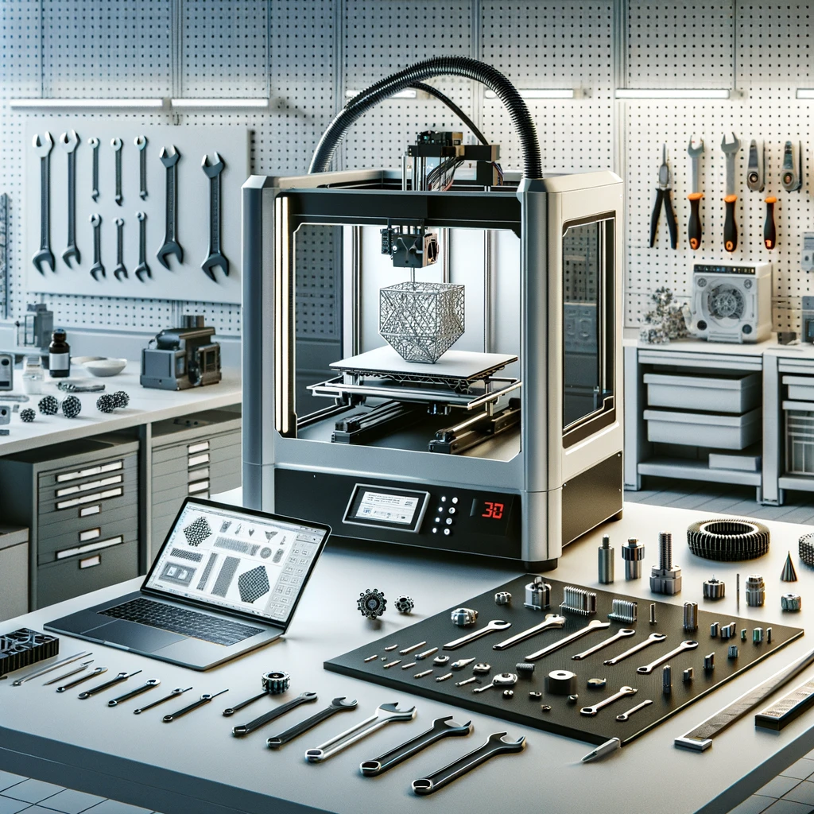
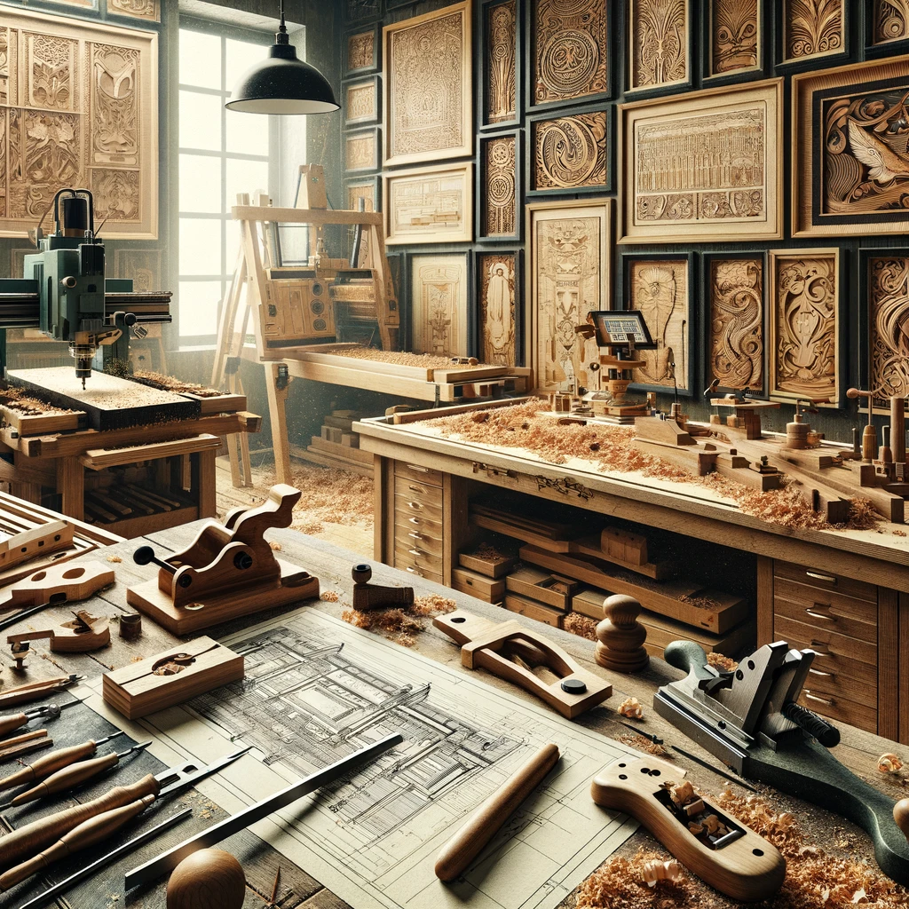
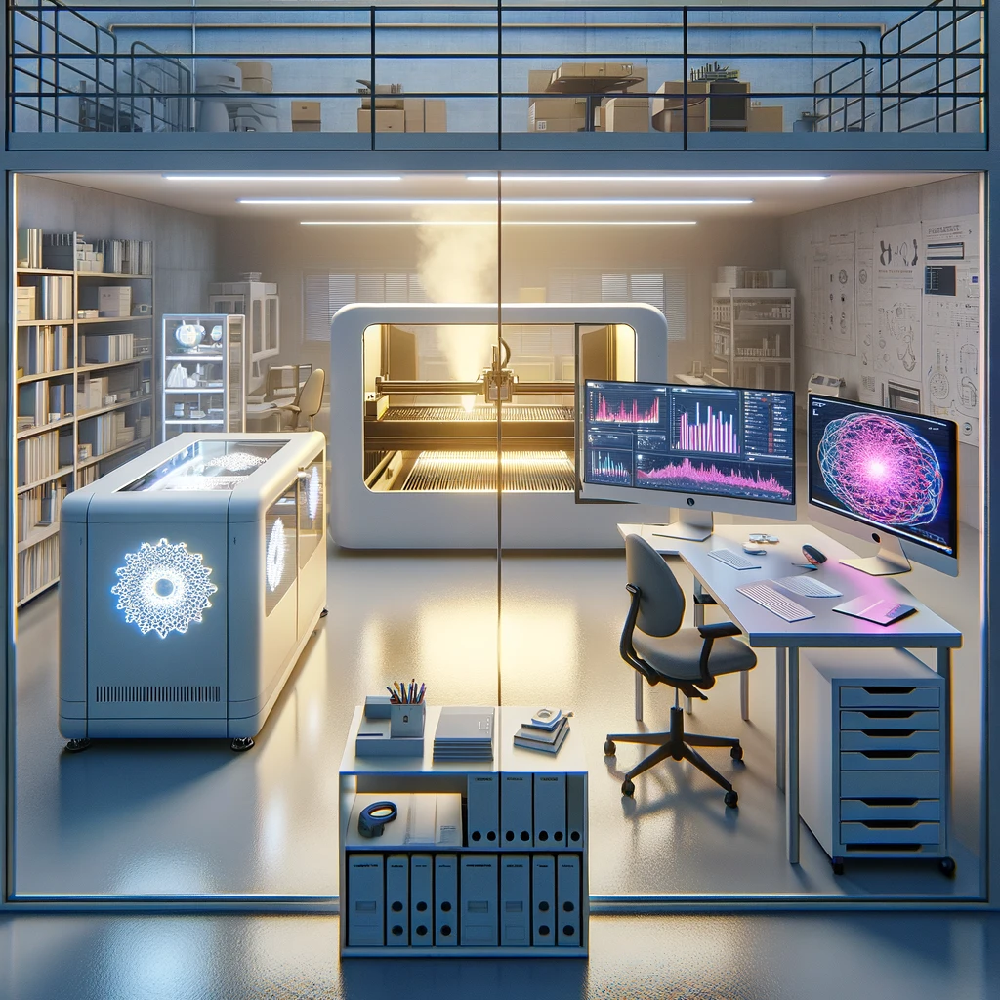

A brief Overview of My Current Skills
My academic and professional forays into computational analysis and design have been anchored by a robust proficiency in Python and MATLAB. These programming languages form the cornerstone of my methodical approach to solving engineering problems. Leveraging the potent capabilities of these tools, I have immersed myself in intricate analyses and simulations, thereby cultivating an analytical mindset that is indispensable for addressing complex engineering tasks. My coding projects have ranged from creating poker simulators to developing databases for airfoil selection and even constructing this very website. The world of coding is not just a professional pursuit but a source of continual excitement and engagement for me, especially as technological progress forges ahead each day, reaffirming the importance of a digital skillset.
Concurrently, my adeptness in SolidWorks has equipped me with the ability to materialize theoretical concepts with meticulous accuracy and imaginative flair. My proficiency in this space is not just about drafting designs but also about embodying them with functionality and life. Through SolidWorks, I've been able to design resilient mechanical parts and simulate complex dynamic systems, always with an eye towards synthesizing abstract principles with their practical implementations.
Learning SolidWorks has indeed been transformative, facilitating the manifestation of ideas into reality—a synergistic complement to my enthusiasm for 3D printing. This powerful combination allows me to translate a spark of imagination into a digital model and subsequently into a physical object I can hold. The complexity of creating full-motion models of machinery has not only enabled a better visualization of systems and forces but has also underscored the profound capabilities of modern engineering tools in bringing even the most intricate concepts to fruition.
This integration of computational prowess and design expertise is central to my professional ethos, underscoring my ability to innovate and excel in the evolving landscape of mechanical engineering.
My journey within the domain of additive manufacturing has been one of rigorous exploration and profound engagement. As an aspiring engineer, I have endeavored not only to extend the frontiers of what can be crafted through this technology but to gain a nuanced understanding of its underlying mechanisms. My involvement goes well beyond simple operation; it encompasses the meticulous maintenance, adept troubleshooting, and proficient repair of 3D printers. This comprehensive approach guarantees not merely the functionality but also the refinement of the printing process. My commitment is to uphold a synergy between machine performance and the precision of the final print, ensuring every component emerges with impeccable fidelity to its design.
The inception of this passion can be traced back to the early days of the pandemic in 2020 when I acquired my first 3D printer, an Ender 3 Pro. What began as a foray into a new area of manufacturing quickly blossomed into a full-fledged passion for the field of additive manufacturing. Over the course of nearly four years, my dedication has seen me immersed in every facet of 3D printing—from consuming literature to engaging in hands-on coding and tinkering. I have meticulously crafted items ranging from the diminutive, such as intricately detailed rings, to the colossal, like an eight-foot greatsword, not to mention a plethora of precision-engineered components for various projects. My zeal is rooted in the art of optimization; by experimenting with slicer software, I relentlessly pursue the dual objectives of maximizing part precision and minimizing production time.
My expertise is further amplified by extensive experimentation with a vast spectrum of plastics, evaluating the distinctive properties of materials including, but not limited to, PLA, PLA+, ABS, PETG, wood composite PLA, iron composite PLA, and carbon fiber nylon.
The opportunity to work in the Fabrication Lab has expanded my knowledge to the operation and understanding of industrial-grade 3D printers, allowing me to scale my skills to more advanced machinery. Four years into this evolving field, I can state with confidence that I possess a depth of expertise in 3D printing, marked by a profound appreciation for its potential and a relentless drive to push its boundaries.
The hands-on engagement with woodworking and precision machining has significantly enriched my understanding of mechanical engineering, fostering an appreciation for the artistry involved in tangible creation. There's a profound connection to be made between the digital precision of engineering designs and the tangible act of shaping materials — a dance between concept and physical execution that has become a cornerstone of my educational journey. As I transition from the virtual realm of digital blueprints to the tactile world of milling and carving, I've developed a deep respect for the unique properties of each material and the indispensable value of manual dexterity in the engineering process.
This interplay between digital acumen and manual craftsmanship strikes a perfect balance, embodying the synergy between traditional engineering methods and contemporary innovation. Engaging in projects such as the Wooden Bike has not only challenged but also refined my woodworking abilities. It has emphasized the significance of prototyping, especially with wood, which is fundamental for an engineer. Wood, being a low-cost and malleable medium, is ideal for early-stage prototyping, providing a canvas to visualize design effectiveness and identify potential flaws.
My access to the Mechanical Engineering Department's woodshop at the University of Delaware has opened up a realm of possibilities. Equipped with an array of robust tools, from bandsaws and miter saws to sanders and an expansive CNC router, no concept was too ambitious to tackle. With such resources at my disposal, coupled with a comprehensive selection of hardware, I was able to translate even the most complex ideas into tangible realities, ensuring that within the creative confines of engineering, no idea was beyond the grasp of realization.
My experience in the Fabrication Lab at the University of Delaware has been integral to my development as a mechanical engineer, specifically through mastering the operation of the Universal VLS4.60 laser cutter. This tool has underscored the importance of precision in design and the seamless integration of technology in engineering practices. The ability to rapidly prototype with the laser cutter has been indispensable, serving not only as a foundational element in my design projects but also as a reliable method for creating intricate components from a variety of materials. Whether working with lightweight balsa wood for constructing airplane ribs or crafting smooth channels in acrylic for pill transportation, the laser cutter has been a critical asset.
This practical expertise is further enhanced by my foray into the realm of data analysis. With Excel as my tool of choice, I delve into data sets to unearth meaningful insights, transforming numbers into actionable strategies. This analytical skill is a testament to my detailed-oriented approach to engineering and project management. It is a reflection of my commitment to precision and my pursuit of excellence in every project I undertake. The synthesis of hands-on technical skills with rigorous data analysis has prepared me to tackle complex engineering challenges with confidence.During my academic tenure as a Mechanical Engineering student, I have consistently showcased a robust aptitude for the rigors of the field, an unwavering commitment to excellence, and a proactive approach to learning. My time as a Teaching Assistant within the esteemed Mechanical Engineering Department at the University of Delaware has not only allowed me to hone my technical skills but also to contribute significantly to the educational journey of my peers. This role has afforded me the privilege of working intimately with the faculty, thereby deepening my understanding of mechanical engineering principles and reinforcing my practical abilities.
The department, known for its rigorous standards and innovative research, has been an ideal setting for my professional growth. My contributions there have ranged from assisting in the development of curricular materials to facilitating laboratory experiments, each task performed with meticulous attention to detail and a keen sense of responsibility. My interactions with both students and professors have been a wellspring of mutual learning, and I believe they can speak to the dedication and passion I bring to my work. For those who seek a comprehensive perspective on my performance and endeavors during my time with the Mechanical Engineering Department, the faculty would undoubtedly provide insightful commentary. I am confident that their observations will mirror my commitment to the discipline of Mechanical Engineering. Should you require further elucidation on the extent and impact of my experiences, or to discuss my potential contributions to your organization, please do not hesitate to reach out to me directly. Moreover, the Mechanical Engineering Department at the University of Delaware is accessible and can furnish additional details pertaining to my academic and professional journey within the department. I earnestly look forward to the opportunity to engage in a dialogue with you regarding my suitability for any endeavors that necessitate a rigorous engineering background, an innovative mindset, and a dynamic approach to problem-solving.